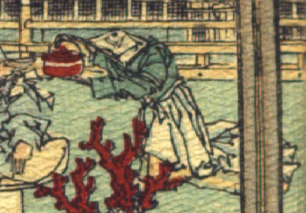

亀らしき化物。緑色の着物、黄色の袴に白い裳を着けて、女官のような装束をしている。銚子を持ち、盃に酒らしきものを注いでいる。
著作者：J. Dautremer／出典：親書誌：U426_nichibunken_0108：Le Prince Feu-Brillant et le Prince Feu-Luisant／日付：2006／資源識別子：U426_nichibunken_0108_0001_0001
Copyright (c)2010- International Research Center for Japanese Studies, Kyoto, Japan. All rights reserved.